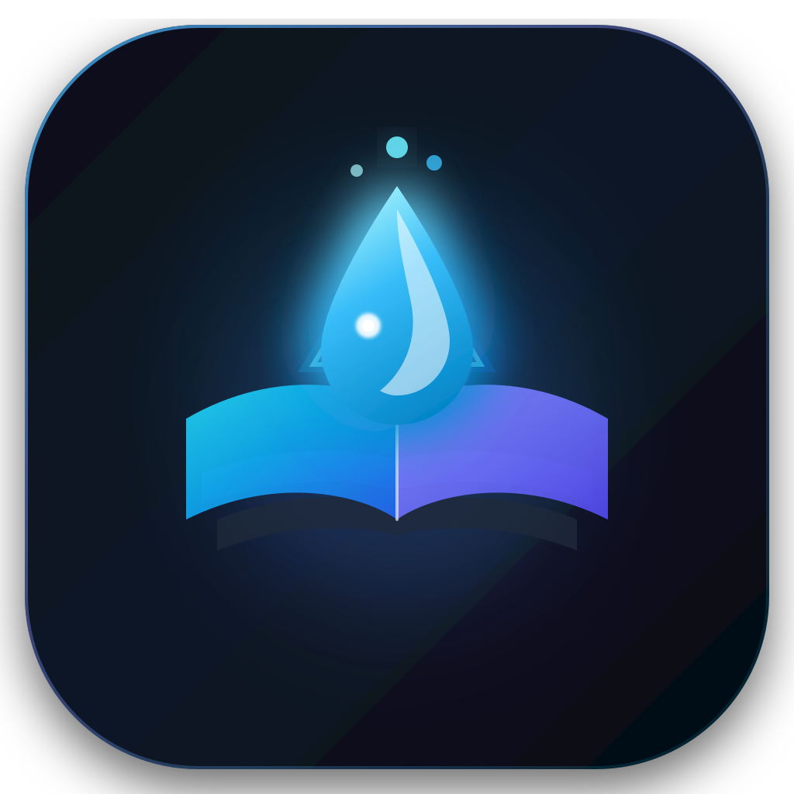
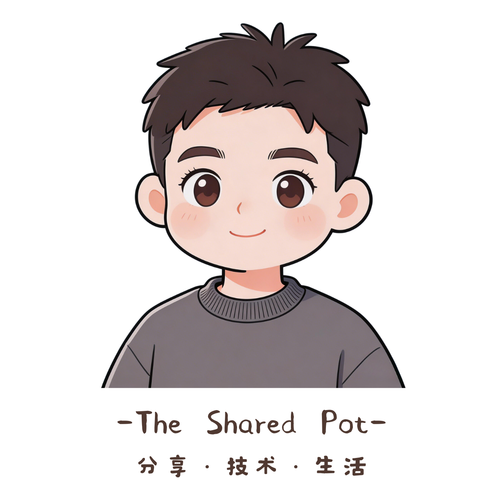
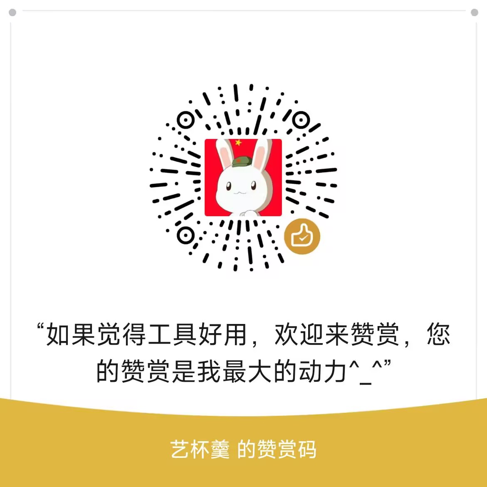

抓取篇数：
全部历史
前 50 篇
前 100 篇
| 序号 | 文章标题 | 发布日期 | 属性 | 状态 | 操作 | |
|---|---|---|---|---|---|---|
| 暂无文章数据，请在上方输入链接并点击【提取 / 解析文章】 | ||||||

| 序号 | 文章标题 | 发布日期 | 属性 | 状态 | 操作 | |
|---|---|---|---|---|---|---|
| 暂无文章数据，请在上方输入链接并点击【提取 / 解析文章】 | ||||||
专注前沿工具研发、知识提纯与个人数字生产力构建。

peace-83 备注【进群】
